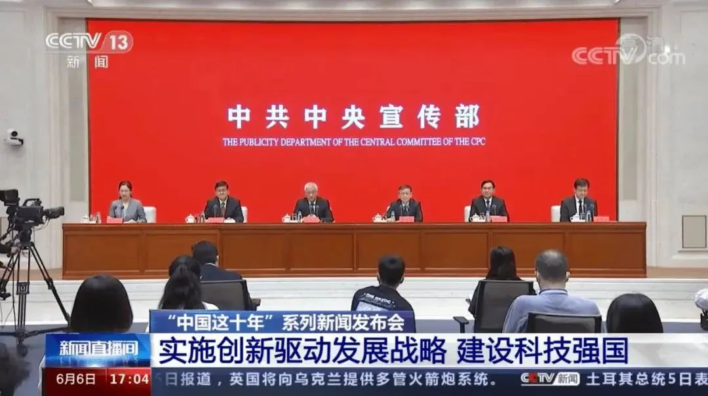
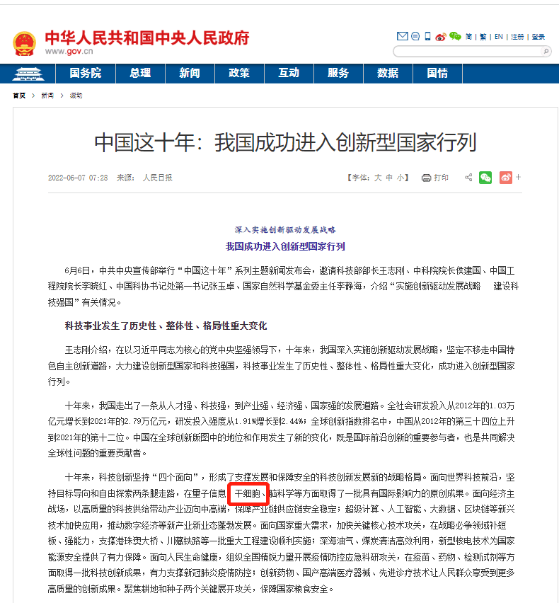
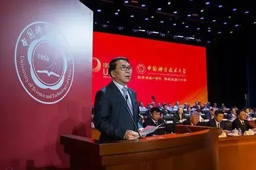
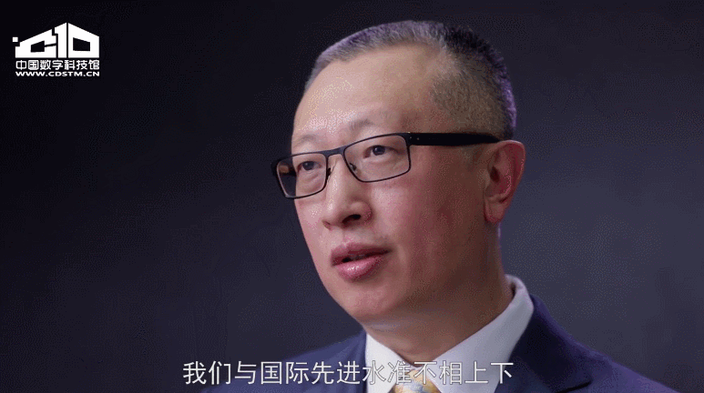
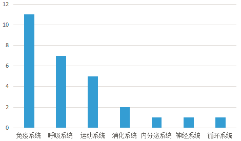
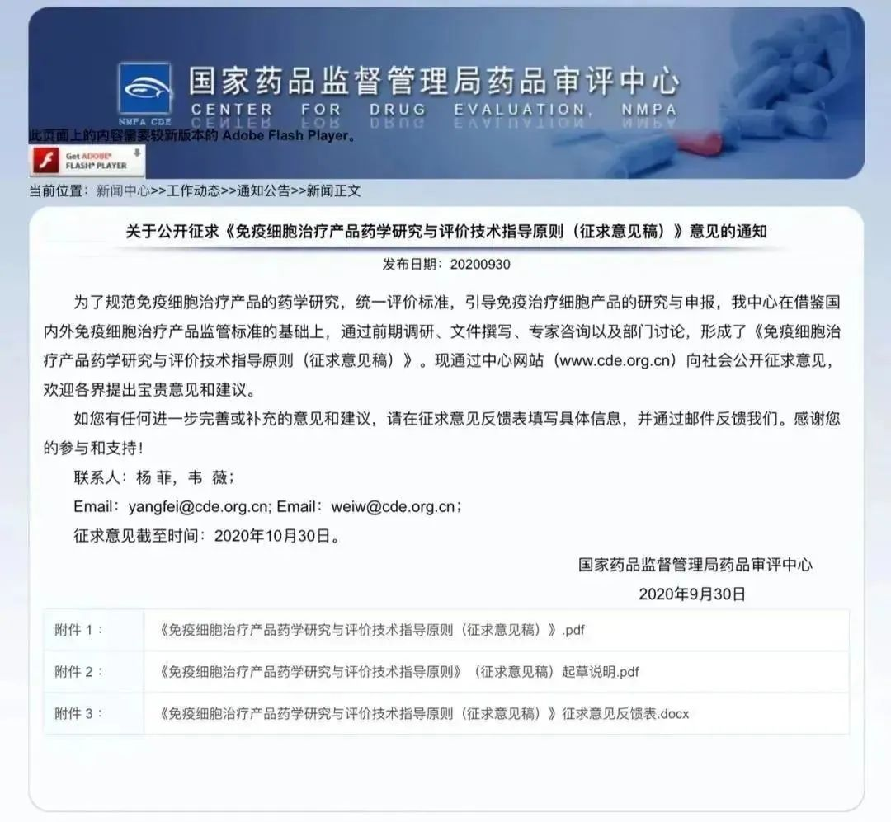
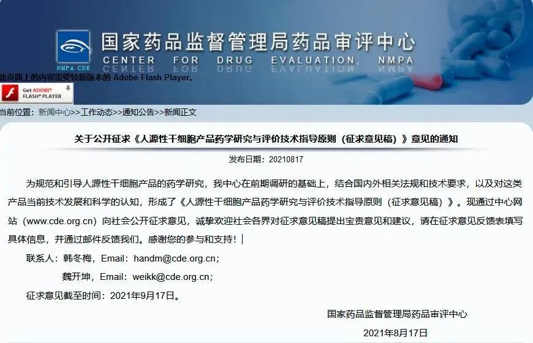
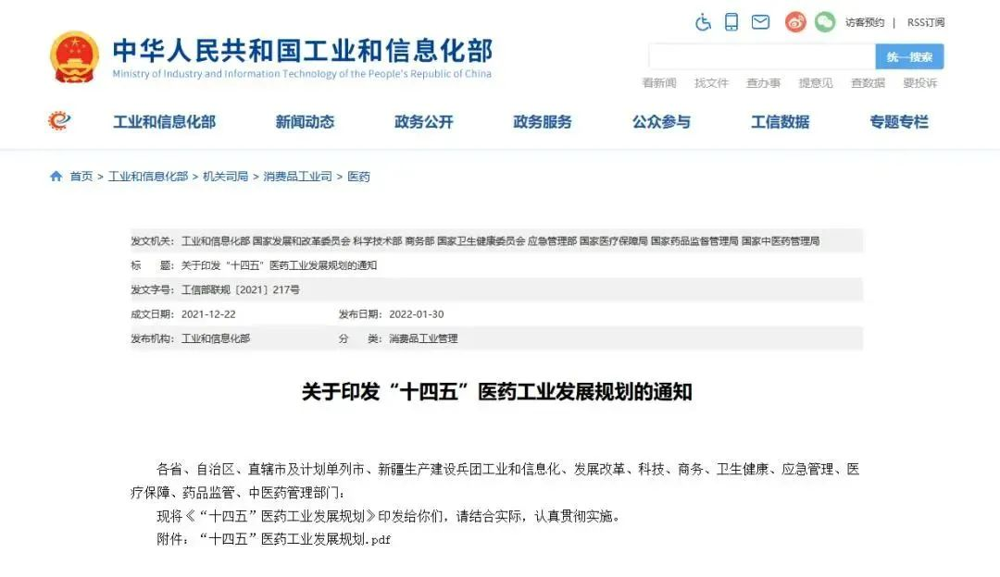

别等身体亮红灯！百年春自体干细胞，为您定制细胞级抗衰防线
2026-03-04

About Us
关于百年春
中共中央宣传部曾举行“中国这十年”系列主题新闻发布会，介绍党的十八大以来“实施创新驱动发展，建设科技强国”有关情况。会上，科技部部长王志刚表示，十年来，我国科技事业发生了历史性、整体性、格局性重大变化，成功进入创新国家行列。

△ “中国这十年”系列新闻发布会现场
王志刚部长特别强调，十年来，在面向世界科技前沿，我们坚持目标导向和自由探索两条腿走路，在量子信息、干细胞、脑科学等方面取得了一批具有影响力的原创成果。

下一步，要坚持改革，以改革促创新，以创新促发展，不断地推动中国科技创新发展，支撑引领经济社会、国家安全、人民健康等方面的提升和发展。
干细胞像是“生命的种子”，在一定条件下可以分化成多种功能的细胞，具有修复各种组织功能和再生器官的能力，因此被医学界称为“万能细胞”，而干细胞领域技术的不断进步与发展也在人类疾病研究及生命延长上起到了巨大作用。
有专家表示，近年来，化学药物、外科手术等传统医疗手段已经越来越受到人口老龄化、慢性病及肿瘤高发的挑战，以干细胞、免疫细胞治疗等为代表的细胞治疗新技术发展迅猛，已经成为当今世界生物医药领域研发的热点。
在化学药物研发方面，中国远落后于欧美发达国家。而干细胞是我国少有的在全球处于“并跑”地位的领域之一，是赶超国际，对标中国位置的全新领域；也是引领医疗趋势，造福百姓的民生大事。
中科院院长白春礼曾在“科学的春天”40周年座谈会上介绍说：我国量子通信、中微子、铁基超导、外尔费米子、干细胞和再生医学等面向世界科技前沿的重要科技成果水平达到世界前列。

△ 中国科学院院长白春礼：中国科学院改革开放四十年
中国科学院院士周琪也曾在《对话科学家》栏目中关于干细胞，他曾这样说道，“我们现在是国际在科技研究和转化应用领域第一阵营的主要力量之一。这种机遇可能在很多领域并不具备，我们与国际先进水准不相上下。”

作为当今医学研究领域最前沿、最热门的方向之一，干细胞技术正在为更多难治性、疑难性疾病的治疗带来曙光，我国干细胞临床研究正在如火如荼的进行着。
截至目前，我国医学研究登记备案信息系统和卫健委公布的干细胞临床研究备案项目已超127项，批准设立的干细胞临床研究备案机构已达141家（含部队医院）。截至2023年12月，国内共有106款干细胞药物临床试验申请获得受理，其中79款获准默许进入临床试验（IND）。
目前获准开展IND的28款干细胞新药针对适应症的治疗效果主要体现在组织修复和免疫调节两个方面，根据各适应症所属的人体系统，我们可以大致得出目前开发干细胞药物的研发趋势：当前已经获准开展IND的干细胞新药有四成（11款）集中在免疫系统方面，这归功于干细胞强大的免疫调节能力；有7款干细胞新药的临床试验针对肺器官相关疾病的治疗；其他干细胞新药临床试验有针对运动系统（骨关节修复相关5款）、消化系统（肝衰竭和牙周炎治疗各1款）、内分泌系统（糖尿病并发症治疗1款）、神经系统（脑卒中治疗1款）和循环系统（地中海贫血治疗1款）。

△ 中国已获准开展IND的干细胞药物数量的适应症范围分布
从临床备案数量及申报药品数量上来看，在全球范围内，中国与美国居于前列，欧盟紧随其后。可以说，中国干细胞技术已处于世界领先水平。2022年，中国细胞药物研发在稳步推进中愈发成熟，相信将来会为我国独立自主的细胞治疗研发道路注入澎湃生机。
2020年9月，国家药监局（CDE）《免疫细胞治疗产品药学研究与评价技术指导原则（征求意见稿）》的发布，可以看到国家对免疫细胞治疗研发的重视，进一步推动细胞行业规范化发展，让细胞治疗向临床产品的目标更进一步。

△ CDE颁布《免疫细胞治疗产品药学研究与评价技术指导原则（征求意见稿）》
2021年，CDE又重磅发布：《人源性干细胞产品药学研究与评价技术指导原则（征求意见稿）》，在规范和指导干细胞产品的药学研发和申报上，有了更规范的要求。

△ CDE颁布《人源性干细胞产品药学研究与评价技术指导原则（征求意见稿）》
国家层面甚至将干细胞列为国家发展重要战略部署，干细胞产业在我国“十三五”规划、“十四五”规划和《“健康中国2030”规划纲要》中，都被列入国家发展战略，这也是我国医疗科技发展的必然方向。
国家科技部、卫健委、发改委、药监局等九部联合印发《“十四五”医药工业发展规划》中明确将免疫细胞治疗、干细胞治疗、基因治疗产品等纳入规划内容，自此，干细胞正式被写入我国第十四个五年规划和2035年愿景目标中。

△ 国家九部委联合印发《“十四五”医药工业发展规划》